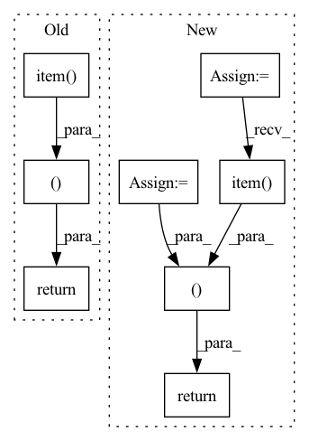

Pattern ID :18476
Before Change
loss_train.backward()
optimizer.step()
return (loss_train_sum / len(train_loader)).item() , (correct_num / len(train_idx)).item()
After Change
loss_train.backward()
optimizer.step()
loss_train = loss_train_sum / len(train_loader)
acc_train = correct_num / len(train_idx)
return loss_train, acc_train.item()
In pattern: SUPERPATTERN
Frequency: 3
Non-data size: 8
Instances Fragment ID: 60339480
Project Name: pku-dair/sgl
Commit Name: b1bd9d09a77a535f71c87fa1d7280c48ba05268b
Time: 2022-04-03
Author: shengzeang@live.com
File Name: tasks/utils.py
M Class Name: AnonimousClass
N Class Name: AnonimousClass
M Method Name: mini_batch_train(7)
N Method Name: mini_batch_train(7)
M Parent Class:
N Parent Class:
M File Name: tasks/utils.py
N File Name: tasks/utils.py
M Start Line: 64
M End Line: 78
N Start Line: 66
N End Line: 83
Before Change
//metrics
step_metrics = {self.stage+"_"+name:metric_fn(preds, labels).item()
for name,metric_fn in self.metrics_dict.items()}
return loss.item() ,step_metrics
class EpochRunner:
def __init__(self,steprunner):After Change
//all_preds,all_labels = self.accelerator.gather_for_metrics((preds, labels))
all_preds = self.accelerator.gather(preds)
all_labels = self.accelerator.gather(labels)
all_loss = self.accelerator.gather(loss).sum()
//metrics
step_metrics = {self.stage+"_"+name:metric_fn(all_preds, all_labels).item()
for name,metric_fn in self.metrics_dict.items()}
return all_loss.item(),step_metrics
class EpochRunner:
def __init__(self,steprunner): Fragment ID: 60339472
Project Name: lyhue1991/torchkeras
Commit Name: b4ca8240901c64ca88e75864f000f5b9d0dcda42
Time: 2022-11-20
Author: liangyun2@tuhu.cn@macbook
File Name: torchkeras/kerasmodel.py
M Class Name: StepRunner
N Class Name: StepRunner
M Method Name: __call__(2)
N Method Name: __call__(2)
M Parent Class:
N Parent Class:
M File Name: torchkeras/kerasmodel.py
N File Name: torchkeras/kerasmodel.py
M Start Line: 41
M End Line: 58
N Start Line: 55
N End Line: 76
Before Change
pred = test_output.max(1)[1].type_as(labels)
correct_num_test += pred.eq(labels[batch]).double().sum()
return (correct_num_val / len(val_idx)).item(), (correct_num_test / len(test_idx)).item()
def train(model, train_idx, labels, device, optimizer, loss_fn):
model.train()After Change
val_output = model.model_forward(batch, device)
pred = val_output.max(1)[1].type_as(labels)
correct_num_val += pred.eq(labels[batch]).double().sum()
acc_val = correct_num_val / len(val_idx)
for batch in test_loader:
test_output = model.model_forward(batch, device)
pred = test_output.max(1)[1].type_as(labels)
correct_num_test += pred.eq(labels[batch]).double().sum()
acc_test = correct_num_test / len(test_idx)
return acc_val.item(), acc_test.item()
def train(model, train_idx, labels, device, optimizer, loss_fn):
model.train() Fragment ID: 60339473
Project Name: pku-dair/sgl
Commit Name: b1bd9d09a77a535f71c87fa1d7280c48ba05268b
Time: 2022-04-03
Author: shengzeang@live.com
File Name: tasks/utils.py
M Class Name: AnonimousClass
N Class Name: AnonimousClass
M Method Name: mini_batch_evaluate(7)
N Method Name: mini_batch_evaluate(7)
M Parent Class:
N Parent Class:
M File Name: tasks/utils.py
N File Name: tasks/utils.py
M Start Line: 46
M End Line: 46
N Start Line: 40
N End Line: 48